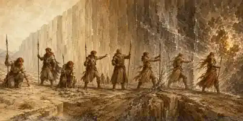
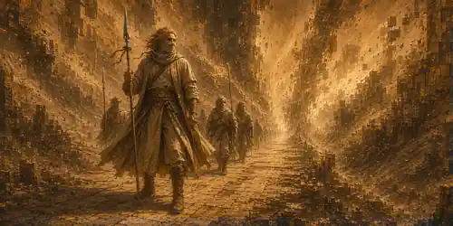

Восемь последовательных рангов Стражей Проходов: от Помеченного Швом до единственного Проводника.

Допуск к Узлу Ядра, последовательность рангов и цена первой связи.
Ранг отражает степень допуска к Узлу Ядра. Он не заменяет класс персонажа и не повышается автоматически с уровнем. Направляющий и ненаправляющий могут состоять в Иерархии на равных основаниях. Ранговые способности не являются плетениями Единой Силы, не расходуют ячейки и не повышают Уровень Силы, СЛ, атаки, урон или ресурс направления.
Ранг Иерархии сам по себе не продлевает жизнь и не замедляет старение.
Ранги получают строго последовательно: I → II → III → IV → V → VI → VII → VIII. Иерарх способен активировать только ранг на одну ступень ниже собственного: II принимает кандидата без ранга и даёт I; III повышает I → II; IV — II → III и так далее. I ранг никого не инициирует.
VII ранг может предоставить только Проводник VIII. Одновременно существует только один Проводник. Если вершина освобождается, один из Архистражей VII ранга должен достигнуть Ядра и пройти Признание Ядра.
Типовой путь: заслуга → испытание → формальная активация допуска. Заслуги и испытание сами по себе ранг не меняют.
При получении I ранга персонаж выбирает одну из трёх постоянных цен.
| Цена | Правило |
|---|---|
| Клеймо Шва | −1 к спасброскам против эффектов аномалий и Тел’аран’риода; +1 к проверкам, непосредственно направленным на обнаружение или понимание аномалий. |
| Энергетическая шумность | Помеха на проверку, которой персонаж пытается скрыть свою связь от функционирующей системы, реально способной обнаруживать энергетический след. Обычная скрытность от глаз и слуха не ухудшается. |
| Долг Стены | Обязанность службы: сопровождение, спасение, охрана прохода, разведка дрейфа и сходные задачи. При сознательном игнорировании Мастер не чаще 1 раза за сессию может ввести связанное осложнение. |
На каждом ранге II–VIII персонаж получает +1 к двум разным характеристикам по новому выбору. Предыдущие повышения сохраняются. До V ранга действует обычный предел 20; на VI новый пакет может поднять выбранные характеристики до 22; на VII и VIII — до 24. Неиспользованный из-за предела пункт теряется.
Обычной универсальной процедуры добровольного выхода, понижения ранга или автоматического отзыва не существует. Такие изменения возможны только через отдельный сюжетный эффект или процедуру, прямо установленную Мастером.
Числовые значения — итоговый профиль текущего ранга; повышения характеристик являются отдельным накопительным исключением.
| Ранг | Название | Характеристики при повышении | КД | Атака | Урон | Макс. хиты | Скорость | Инициатива | Спасброски |
|---|---|---|---|---|---|---|---|---|---|
| I | Помеченный Швом | — | — | — | — | — | +0 фт | −1 | — |
| II | Страж Узла Прохода | +1 к двум | — | +1 | +1 | — | +5 фт | +1 | +1 |
| III | Ведущий Каравана | +1 к двум | +1 | +1 | +1 | — | +5 фт | +2 | +2 |
| IV | Хранитель Окна | +1 к двум | +1 | +2 | +2 | +20 | +5 фт | +3 | +3 |
| V | Страж Дрейфа | +1 к двум | +2 | +2 | +2 | +40 | +10 фт | +4 | +4 |
| VI | Голос Гребня | +1 к двум, новый предел 22 | +2 | +3 | +3 | +60 | +10 фт | +5 | +5 |
| VII | Архистраж Проходов | +1 к двум, новый предел 24 | +3 | +3 | +3 | +80 | +15 фт | +6 | +5 |
| VIII | Проводник | +1 к двум, предел 24 | +3 | +4 | +4 | +100 | +15 фт | +7 | +6 |
Бонус атаки применяется к броскам атак оружием и безоружным атакам. Плоский бонус урона применяется к каждому попаданию такой атакой и имеет тип основного урона. Бонус КД является постоянной совместимой прибавкой к обычному КД. Бонус к максимуму хитов не лечит персонажа при получении ранга. Ранговый бонус спасбросков применяется ко всем спасброскам, включая спасброски от смерти.

Навигация, чтение временных аномалий, петли, работа с узловой точкой и защита каравана.
⚔ Стена Стенные метки. Пока вы лидер маршрута, снимаете именно помеху Шума Узора на Мудрость (Выживание), вызванную отсутствием проводника или меток. Другие источники помехи сохраняются.
⚔ Стена Привязки маршрута. 1 раз за каждый час Ореола, если ваша «Держать маршрут» провалена на 5 или больше, можете заменить STAB −2 и Удар среды на обычный провал STAB −1 без Удара среды.
⚔ Стена Срыв ложного ориентира. 1/долгий отдых отменяете помеху от «Ложного ориентира» на следующую «Держать маршрут»; если проверка всё равно провалена, дополнительная потеря 1d4 часов от этого эффекта не происходит.
◈ Аномалия Чутьё временной аномалии. Пассивно ощущаете временную аномалию в 300 фт, знаете направление и примерную дистанцию, но не рейтинг и тип.
⚔ Стена Стабилизация маршрута. Когда вы лидер, «Держать маршрут» совершается с преимуществом. 1 раз за час обычный провал может не уменьшить STAB. Провал на 5+ этой частью способности не отменяется; если тяжёлый провал уже смягчён «Привязками маршрута», Стабилизация к нему не применяется.
Плащ Тени. 1/долгий отдых, бонусное действие. Получаете временные хиты в количестве, равном уровню персонажа, и до начала своего следующего хода имеете сопротивление всему урону.
◈ Аномалия Кожа Ореола. Реакция, 1/короткий отдых. При физическом уроне среды временной аномалии совершите проверку Мудрости СЛ 10 + R; успех даёт сопротивление этому конкретному урону.
◈ Аномалия Распознавание аномалии. Действие, 60 фт, Мудрость (Восприятие) СЛ 12. Успех: узнаёте R и тип A Энергия, B Иные измерения или C Тел’аран’риод. Провал: только тип.
⚔ Стена Петлярез. Одно общее использование 1/короткий отдых, без действия или реакции. При срабатывании выберите: при входе в STAB 6–4 отменить потерю 1d4 часов, сохранив Удар среды; либо при эффекте среды Стены/временной аномалии, который должен сбить вас с ног или обнулить скорость, остаться на ногах и сохранить скорость.
◈ Аномалия Точно в цель I. Атаки оружием и безоружные атаки по существам с тегом «Аномальное происхождение» критуют на 19–20.
⚔ Стена◈ Аномалия Шкура Стены. Постоянное сопротивление физическому урону среды Стены и временных аномалий; прямые атаки существ не затрагиваются.
◈ Аномалия Точка схлопывания. Действие, Мудрость (Восприятие) СЛ 10 + R. Успех отмечает более выгодную узловую точку для Пирамидки Ордена; повторная попытка после провала возможна в следующий раунд.
⚔ Стена◈ Аномалия Щит от Удара среды. Реакция, 1/короткий отдых. Когда Удар среды или иной эффект среды временной аномалии заставляет союзников в 30 фт совершить спасбросок, используйте реакцию до бросков: союзники получают преимущество и сопротивление урону, непосредственно причинённому этим срабатывающим эффектом.
⚔ Стена Заслон Каравана. 1/короткий отдых, бонусное действие, 1 минута. Союзники в ауре 20 фт получают +1 КД. При активации выберите дробящий, колющий или рубящий урон от немагических источников; вы имеете сопротивление выбранному виду до конца ауры.
Метки, устойчивость, Якорь формы, Фиксация окна и Метод Гребня.
⚔ Стена◈ Аномалия Работа с Меткой Узора. 1/долгий отдых, когда вы получили Метку и уже бросили первый 1d6, бросьте второй 1d6 и выберите один результат. Кроме того, 1 раз за 24 часа можете совершить «Распознавание аномалии» с преимуществом.
◈ Аномалия Точно в цель II. По «Аномальному происхождению» критический диапазон 18–20; при каждом попадании оружием или безоружной атакой дополнительно 1d6 урона типа основного урона атаки.
◈ Аномалия Иммунитет среды. 1/долгий отдых, бонусное действие. Мудрость СЛ 10 + R; успех даёт на 1 минуту иммунитет к физическому урону среды этой временной аномалии; при провале сохраняется обычное сопротивление Шкуры Стены.
◈ Аномалия Быстрая точка. «Точка схлопывания» теперь может выполняться бонусным действием с той же СЛ и эффектом.
◈ Аномалия Предвестник. Пассивно чувствуете формирующуюся временную аномалию за 5 минут до проявления в 600 фт. Если встреча непосредственно вызвана этой обнаруженной аномалией, сопровождаемая группа не может быть застигнута врасплох в первый раунд.
⚔ Стена Якорь формы. 1/долгий отдых, без действия. Когда STAB должен стать 0, он становится 1. Каждый участник группы, включая вас, делает Телосложение СЛ 15: провал — 1 уровень истощения, успех — ничего. Затем немедленно проводится одна встреча с существами аномального происхождения; после неё STAB остаётся 1.
Аномальная стойкость. При получении VI ранга один раз выберите дробящий, колющий или рубящий урон от немагических источников: постоянное сопротивление выбранному виду и иммунитет к состояниям испуган и очарован.
⚔ Стена◈ Аномалия Броня Стены. Постоянный иммунитет к физическому урону среды Стены и временных аномалий. Прямые атаки существ не затрагиваются.
⚔ Стена Фиксация окна. 1/неделю. В течение 1 минуты непрерывно прокладываете и удерживаете окно, затем «Держать маршрут» по СЛ текущей зоны. Успех фиксирует геометрию на 10 минут, не отменяя Удары среды, существ и иные события. Провал: STAB −2 и немедленный Удар среды.
Режим Бастиона. 1/долгий отдых, бонусное действие, 10 минут. Преимущество на все спасброски, временные хиты = 3 × уровень и сопротивление огню, холоду и психическому урону. Оставшиеся временные хиты исчезают в конце.
◈ Аномалия Живая точка. Если вы в 30 фт от Пирамидки при начале установки и остаётесь там до завершения, операция получает +1 к эффективному рейтингу извлечения; с успешной Точкой схлопывания общий максимум +2. Несколько Стражей максимум не увеличивают.

⚔ Стена Метод Гребня. Не чаще одного раза за 30 суток проводите группу через Ядро так, что каждый участник за весь переход делает только один спасбросок Телосложения СЛ 18 и один спасбросок Мудрости СЛ 18 вместо повторения каждые 10 минут. Обычные последствия этих двух спасбросков сохраняются.
Легендарная устойчивость Стены. 1 раз за 24 часа после провала собственного спасброска можете считать его успешным без действия. Находясь во временной аномалии, вместо этого можете потратить использование на союзника в 60 фт, провалившего спасбросок.
◈ Аномалия Точно в цель III. По существам с «Аномальным происхождением» критический диапазон 17–20; дополнительный урон Точно в цель II заменяется на 1d8 того же типа, что основной урон атаки.
Страж Проходов улучшает узловую точку Пирамидки, но не заменяет оператора Ордена.
Иерархия Аномальной Стены не входит в Орден Стражей Узора и не подчиняется ему. Стражи Проходов специализируются на маршрутах, окнах, караванах и выживании у фронта; Орден — на исследовании и стабилизации временных аномалий, Пирамидках и извлечении избытка энергии.
Пирамидка сама способна найти обычную пригодную узловую точку. Страж Проходов не делает операцию возможной — он находит более выгодную точку извлечения.
Успешная Точка схлопывания: Rэфф = R +1. Живая точка может добавить ещё +1; общий максимум R +2. Фактический рейтинг аномалии не меняется.
Rэфф применяется к длительности извлечения и таблицам количества захваченной энергии/редкости результата. Финальная СЛ остаётся 10 + фактический R; среда, существа и иные параметры аномалии также используют фактический R.
По текущим правилам Ордена длительность извлечения: 1d10 + Rэфф − ранг Иерархии оператора Ордена, минимум 1 раунд.
Более выгодная точка повышает выход энергии и шанс редкого результата, но обычно увеличивает время нахождения у опасного узла.